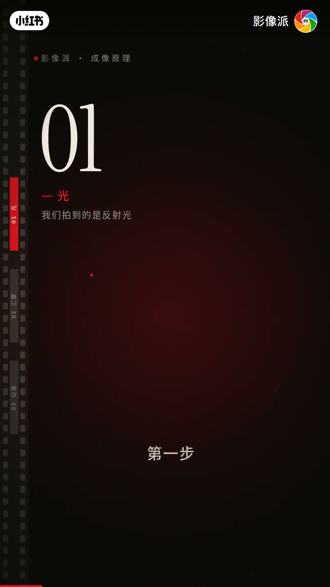
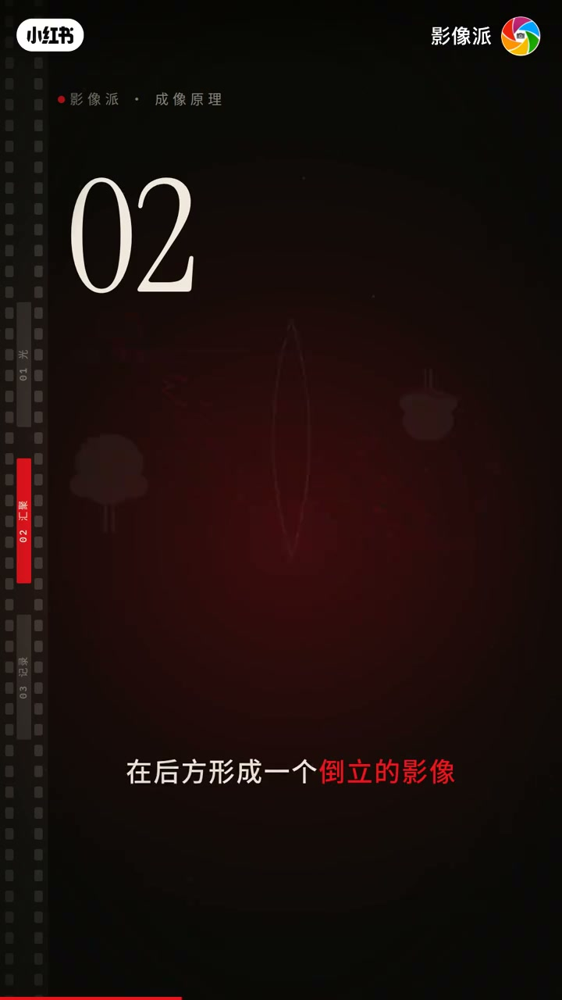
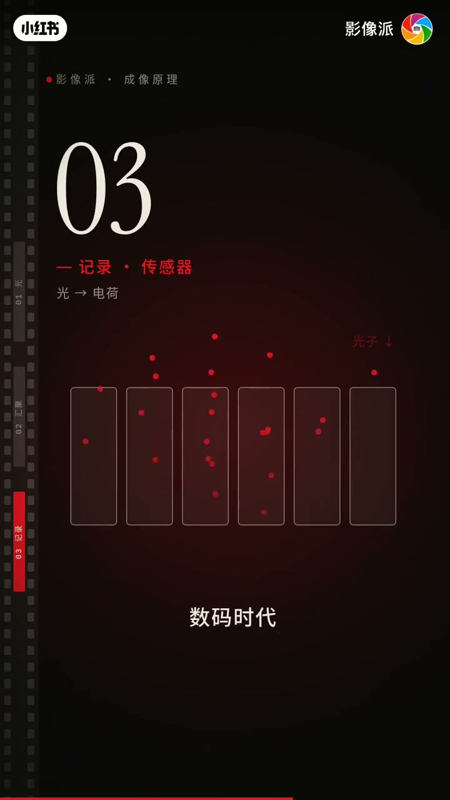
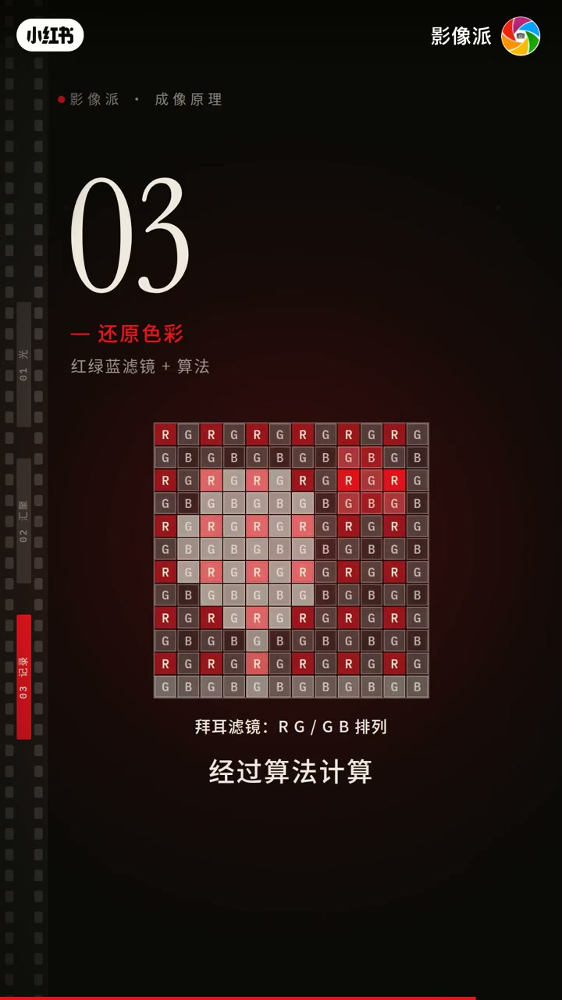

内容要点
「影像派」把成像拆成三步：光（拍到的是反射光）→汇聚（小孔又暗又糊，镜头把汇聚点落到感光面）→记录（胶片银盐 / 数码像素+RGB 滤镜算法还原彩色）。一张照片=光被反射、汇聚、记录的一次旅行。前半约30秒口播稀疏，步骤标题以画面为准。
知识结构
[00:00→00:14]
01 光
按下快门的千分之一秒里；我们拍到的是反射光。
[00:14→00:33]
02 汇聚
小孔成像又暗又糊；镜头让光线正好汇聚在感光面上，光圈与快门共同决定亮度。
[00:33→01:01]
03 记录
胶片银盐显影；数码像素变电荷，RGB 滤镜+算法还原彩色。
总结
照片不是「按一下就有」：先有反射光，再被镜头汇聚到感光面，最后被化学或电子记录——三步缺一不可。
00:00-00:33光与汇聚：从反射到落在感光面
开场「按下快门的千分之一秒里」。第一步「光」：我们拍到的是反射光。第二步「汇聚」：小孔 vs 镜头——小孔又暗又糊；镜头把汇聚点落到感光面才算对焦。光圈与快门「两者一起决定照片的亮度」。

[00:08] 01 光：我们拍到的是反射光
01 Light: what we photograph is reflected light

[00:20] 汇聚点落在感光面上的对焦示意
Focus diagram: the convergence point lands on the sensor plane
00:33-01:01记录：银盐化学 vs 像素电荷与彩色还原
第三步记录：胶片时代光让银盐化学变化，冲洗后影像显现；数码时代传感器上千万像素把光变电荷，光越强电荷越多。像素本身只辨明暗，上面盖红绿蓝滤镜，经算法才还原彩色。
收束：一张照片就是光的一次旅行——被反射、被汇聚、被记录。脚注：约00:02–00:30 口播段缺失，汇聚段细节依据画面字幕补全。

[00:40] 数码像素把光变成电荷
Digital pixels turn light into charge

[00:52] RGB滤镜与算法还原彩色
RGB filter array and algorithms reconstruct color
完整转录（25段）
以下文本由 Whisper medium 模型自动转录，可能存在少量识别误差，已尽可能修正。
按下快门的千分之一秒里
两者一起决定照片的亮度
第三步
记录
胶片时代
光让银银发生化学变化
冲洗之后
影像才显现出来
数码时代
传感器上排著几千万个像素
每个像素把光变成电荷
光越强
电荷越多
不过
像素只能分辨明暗
它上面盖著红
绿
蓝三色绿镜
经过算法计算
才还原出彩色
所以一张照片
就是光的一次旅行
被反射
被汇聚
被记录